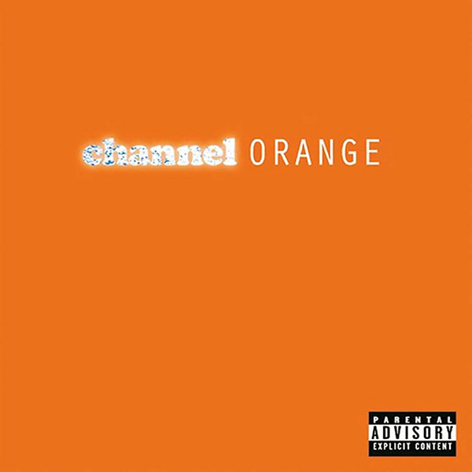
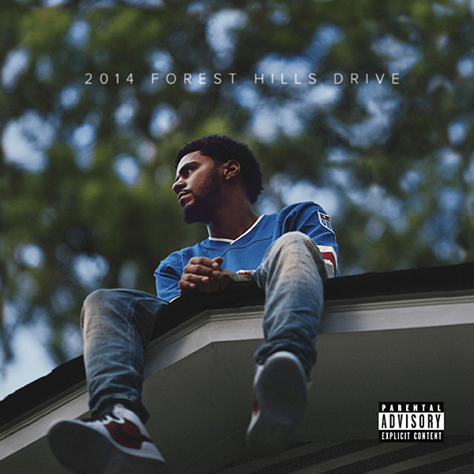

Turntable Treasures este un magazin românesc de discuri vinil. De peste 5 ani aducem în casele iubitorilor de muzică cele mai îndrăgite albume în format analogic, combinând plăcerea de a colecționa viniluri cu cea de a asculta proiectele artiștilor preferați. Ne mândrim cu o colecție diversificată care acoperă genuri de la jazz și soul, până la rock și heavy metal.
Povestea noastră
Magazinul nostru a luat naștere din dorința de a le oferi pasionaților din România posibilitatea de a găsi proiectele dorite pe plan local, fără a mai fi nevoie să aștepte perioade îndelungate până la livrarea comenzilor. Din prima zi ne-am propus să oferim nu doar discuri vinil, ci și cunoștințe, sfaturi și un spațiu în care pasionații să se întâlnească și să discute despre subiectele favorite. Prin evenimente de lansare și colaborări cu artiștii autohtoni, am reușit să creăm mai mult decât un magazin de discuri vinil - am construit o comunitate unită prin pasiunea pentru muzică. I feel like music is best consumed in atmosphere. - după cum a afirmat artistul R&B Frank Ocean în cadrul unui interviu acordat publicației Complex.
Cui ne adresăm?
Ne adresăm tuturor celor care caută mai mult decât muzica digitală, cea cu care suntem cu toții familiarizați. Fie că ești DJ profesionist, fan înrăit al acestui concept sau un simplu curios, la Turntable Treasures vei găsi un loc în care pasiunea pentru muzică ne leagă. Credem că muzica merită să fie apreciată în adevăratul sens al cuvântului, iar în această eră a streamingului este tot mai rar întâlnită alegerea unui disc cu albumul preferat. Suntem aici pentru cunoscători, fani ai formatului analogic, dar și pentru cei care pășesc pentru prima oară în acest domeniu.
Adăugate recent
Aici vei găsi cele mai noi produse.

channel ORANGE - Frank Ocean
Flowerboy - Tyler, The Creator
Cele mai căutate produse
Aici vei găsi bestsellerele noastre.

2014 Forest Hills Drive - J. Cole
IGOR - Tyler, The Creator
Link-uri pentru pasionați
Genius
Genius reprezintă o platformă online dedicată muzicii. Aceasta conține de la interviuri cu artiști până la discuții ample pe baza versurilor unor piese. În cadrul site-ului, pasionații de muzică, fie ea contemporană sau clasică, se adună pentru a se documenta cu privire la proiectele lor favorite.
Rate Your Music
Rate Your Music este un site prin intermediul căruia utilizatorii pot oferi proiectelor ascultate un rating de la 1 la 5 stele. Astfel, cei care doresc să descopere un nou proiect care să le fie pe plac pot verifica rating-ul acordat de alte persoane. Platforma oferă și posibilitatea de a scrie o recenzie detaliată, fapt ce transformă Rate Your Music într-o resursă valoroasă atunci când vine vorba de descoperirea de noi albume.
Întrebări frecvente
Care sunt dimensiunile standard ale discurilor vinil?
Discurile vinil pot fi:
LP - 30cm, având un album întreg
Single - 17.5cm, având una-două melodii
EP - 25cm, având mai multe melodii decât un Single, dar mai puține decât un LP
Maxi Single - 30cm, folosit pentru remixuri și piese dance
Cum îmi pot păstra vinilurile în condiții optime?
Discurile de vinil trebuie depozitate în permanență vertical, niciodată culcate unele peste celelalte, pentru a preveni deformarea. Se recomandă utilizarea unor huse interioare anti-statice. Păstrați colecția într-un mediu uscat, ferit de lumina directă a soarelui, la temperaturi cuprinse între 15-21°C. Curățați regulat discurile, folosind o perie anti-statică înaintea fiecărei redări.
Cum funcționează procesul de livrare?
Comenzile online sunt procesate în termen de 24 de ore de la plasare. Discurile sunt ambalate cu grijă, fiind puse în cutii rigide de carton. Livrarea se face printr-un serviciu de curierat specializat, pachetele având marcajul „fragil”. Timpul de livrare poate varia de la 5 până la 7 zile lucrătoare.
Catalogul nostru de produse - Colecția Hip-Hop, Rap și R&B